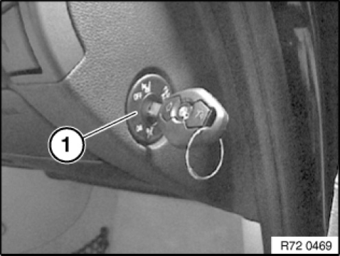
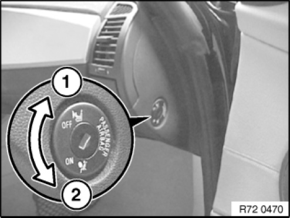
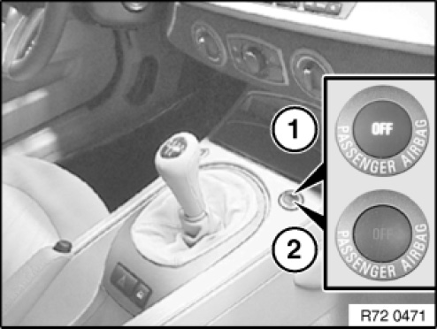

72 12 ... Deactivating Front Passenger Airbags With Key-operated Switch
72 12 ... Deactivating Front Passenger Airbags With Key Switch

WARNING:
The responsibility for deactivation/activation rests with the customer.
Depending on the assignment of the front passenger seat, the front passenger and side airbags must be (de-)activated in accordance with the Owner's Handbook.

The front passenger airbag can only be deactivated in accordance with the following instructions if the vehicle is equipped with a suitable key switch.
The key switch can be retrofitted if it is missing and has been ordered as an optional equipment.
key switch:
- Optional equipment 5DA for MINI
- Optional equipment 470 for BMW

Only E83 up to 09/2004:
See deactivation of airbags
Only E83 from 09/2004:
Deactivation using key switch, see following operations
Only R50/R53 up to 04/2004:
See deactivation of airbags
Only R50/R53 from 04/2004 and R52 from series introduction:
Deactivation using key switch, see following operations

The following airbags are deactivated simultaneously with the key switch (1):
- Front passenger airbag
- Side airbag (front passenger side)
- If necessary, knee airbag in US version (front passenger side)
The airbags can only be deactivated/reactivated while the vehicle is stationary and with the door open.
IMPORTANT: The head airbag remains active.

Deactivation
1 Turn key switch with ignition key to "OFF" position.
Deactivatable airbags on front passenger side out of operation.
Head airbag on front passenger side remains active.
All airbags on driver's side remain active.
Activation
2 Turn key switch with ignition key to "ON" position.
All the airbags in the vehicle are activated and are triggered in appropriate situations.

Indicator light
When the ignition key is turned in the ignition lock, the function of the airbag system is checked and the indicator light in the centre console lights up for several seconds.
1 The indicator light is permanently ON when the front passenger airbags are deactivated
2 The indicator light goes out after a few seconds when the front passenger airbags are activated